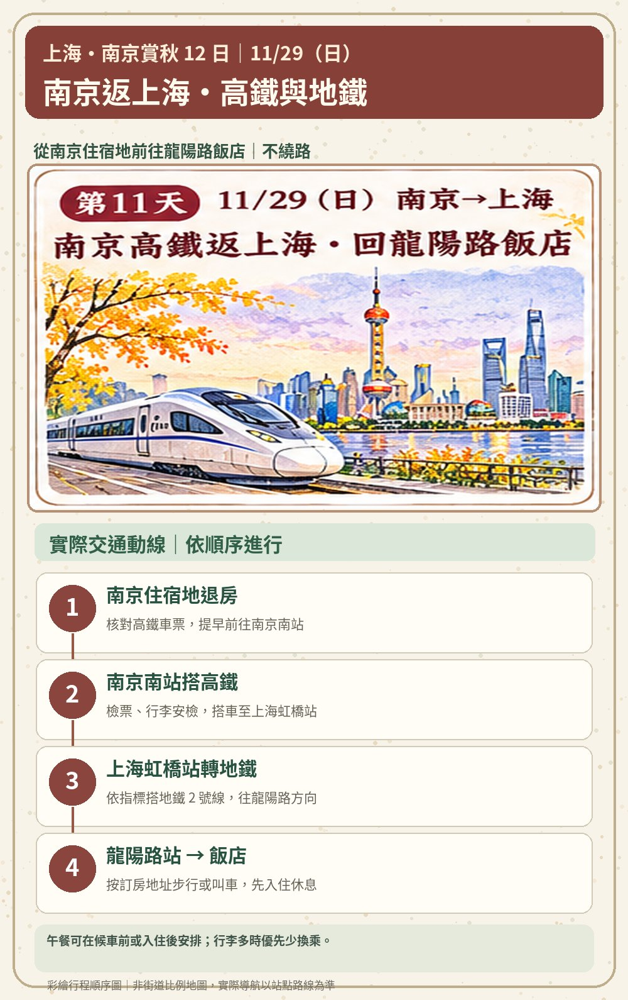
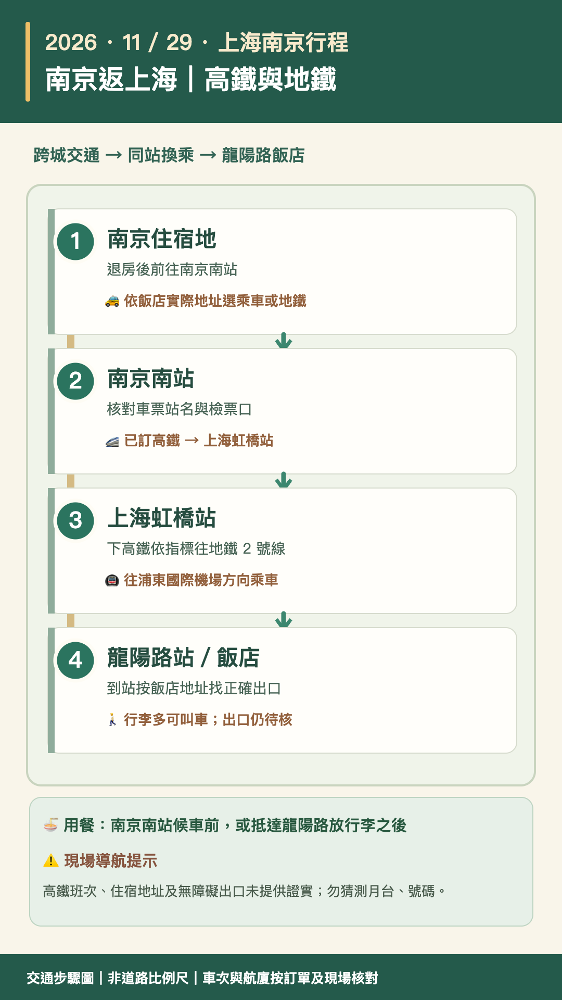

11/29（日） 高鐵返上海
🍁 11/29｜南京南 → 上海虹橋 → 龍陽路｜跨城換乘實用路線圖

查看交通轉乘四步驟圖（輔助資料）

🚆 11/29｜南京回上海｜南京南 → 上海虹橋 → 龍陽路
- 南京住宿退房 → 南京南站
先看實際高鐵車票的開車時間和車站；預留行李安檢與步行到檢票口時間
- 南京南站 → 上海虹橋站
搭已訂班次的高鐵，出站按上海虹橋站地鐵指標換乘
- 上海虹橋站 → 龍陽路站
可搭地鐵 2 號線往浦東方向，到龍陽路站；行李多或累時比較計程車方案
- 飯店入住・補給餐食
以龍陽路住宿地為主；午晚餐可安排在高鐵站候車前或入住後，不為探店帶行李繞路
高鐵班次、飯店名稱及正確地鐵無障礙出口沒有完成當日訂單核對，不填虛構發車時間或出口號碼。
已核對交通營運資訊；實際班次及現場管制可能更新。官方或交通資料
11/29（日） 高鐵返上海展開 ▾
🚇 怎麼去
退房→南京南高鐵→上海虹橋→龍陽路盎格酒店
📷 看什麼・怎麼拍
回程以不趕路為主
☔ 雨天／替代
雨天直接入住
🍜 小楊生煎 上海